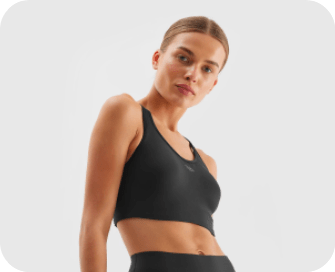

110 min
Daily norm of sports
Favorites
It appears that you haven't added any exercises to your favorites yet. To get started, you can add exercises that you like to your favorites for easier access in the future.